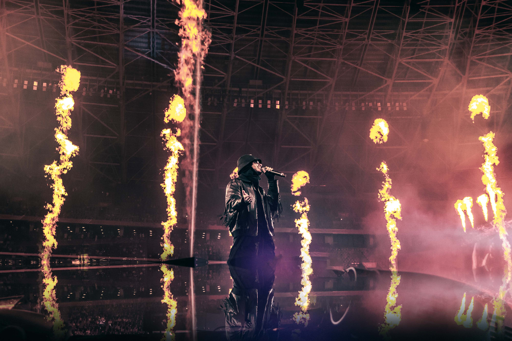

Üdvözlet
Fedezd fel Azahriah hivatalos rajongói oldalát! A tehetséges magyar énekes-dalszerző legújabb slágereivel és különleges tartalmakkal vár. Ha szereted a friss, kreatív zenét és szeretnél közelebbről is megismerkedni a munkásságával, itt a helyed! Ne maradj le a legújabb hírekről és eseményekről. Ismerd meg közelebbről!
